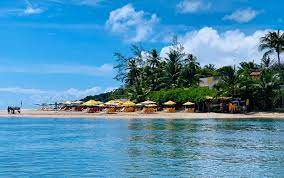
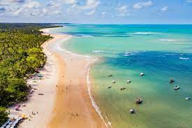
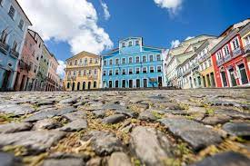
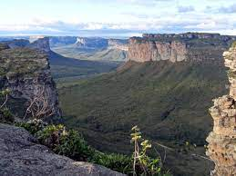
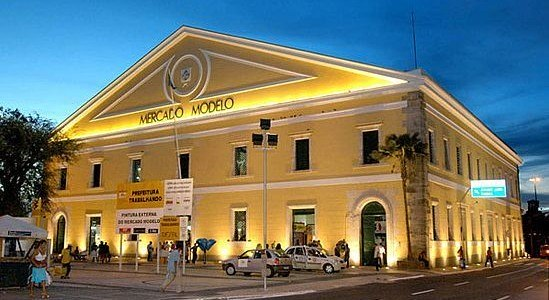
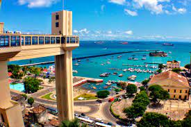

Ilha de Boipeba
A Ilha de Boipeba localiza-se no município de Cairu, no litoral do estado brasileiro da Bahia. É vizinha de Ilha de Tinharé, onde está situado o Morro de São Paulo e com a qual compõe o Arquipélago de Cairu, constituindo-se num apreciado ponto turístico da Bahia.
Mais informações
Ilhéus
Ilhéus é um município brasileiro no litoral e sul do estado da Bahia, Nordeste do Brasil. É a cidade com o mais extenso litoral entre os municípios do estado. Ilhéus foi fundada em 1534 como "Vila de São Jorge dos ilheos", e elevada a cidade em 1881.
Mais informações
Trancoso
Trancoso é um distrito do município brasileiro de Porto Seguro, no litoral do estado da Bahia. De acordo com o Instituto Brasileiro de Geografia e Estatística, sua população no ano de 2010 era de 11 006 habitantes, sendo 5 604 homens e 5 402 mulheres, possuindo um total de 4 816 domicílios particulares.
Mais informações
Porto Seguro
Porto Seguro é uma estância turística costeira no estado brasileiro da Bahia. Possui aproximadamente 90 quilómetros de praias tropicais, incluindo a popular Praia de Taperapuãn. A cidade é também conhecida pela vibrante vida noturna, centrada no passeio repleto de bares, Passarela do Álcool. Durante a altura do Carnaval, artistas com trajes extravagantes e desfiles de músicos de samba ajudam a criar uma festa de rua de arromba.

Mais informações
Centro Histórico de Salvador
O centro histórico de Salvador apresenta grupos de construções e espaços que permitem a leitura do modelo das cidades fundadas pelos portugueses no além–mar. Os limites da primeira cidade (morfologicamente planejada e ortogonal), a sua expansão (de características menos rigorosas, formada por ruas constituídas por um casario uniforme, entremeado por conjuntos de arquitetura monumental) e, principalmente, a distinção entre a Cidade Alta e a Cidade Baixa garantem a identificação de uma paisagem herdada do período colonial.
Mais informações
Parque Nacional da Chapada Diamantina
Parque Nacional da Chapada Diamantina é um parque nacional brasileiro criado em 17 de setembro de 1985 através do decreto federal 91.655, com uma área de 152 mil hectares na região da Chapada Diamantina, distribuído pelos municípios de Lençóis, Mucugê, Ibicoara, Andaraí e Palmeiras, no estado da Bahia.
Mais informações
Mercado Modelo
Uma casa amarela em frente à Baía de Todos-os-Santos. Um tradicional cartão postal de Salvador. Situado no bairro do Comércio, na Praça Visconde de Cayrú, o Mercado Modelo é uma importante atração turística da cidade. Na mesma região, também estão localizadas outros importantes pontos de Salvador, como a própria Baía de Todos-os-Santos, Elevador Lacerda, Pelourinho, Museu de Arte Moderna e Cidade da Música da Bahia, Terminal Turístico Náutico, Catedral Basílica Primacial de São Salvador e Casa do Carnaval da Bahia.
Mais informações
Elevador Lacerda
O Elevador Lacerda é um sistema de transporte público da cidade de Salvador, capital do estado brasileiro da Bahia. Trata-se do primeiro elevador urbano do mundo. Em 8 de dezembro de 1873, quando a primeira torre foi inaugurada, era o elevador mais alto do mundo, com 63 metros.
Mais informações